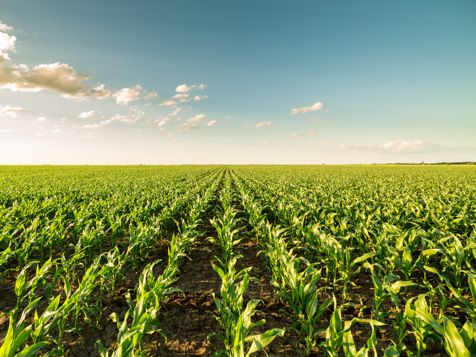

El maíz es un cultivo esencial en Extremadura, utilizado tanto para consumo humano como para alimentación animal.
Plantación de maíz:
Aunque cada vez sea menor su uso, ha sido durante mucho tiempo y sobretodo antes uno de los principales cultivos de la zona.
Debido a su gran utilidad tanto para consumo humano como para los animales así como su fácil cuidado ya que es un cultivo que tiene menos gastos y necesita de menos inversión en comparación con los anteriormente nombrados.
Si deseas más información sobre el cultivo del maíz en Extremadura, rellena el siguiente formulario.